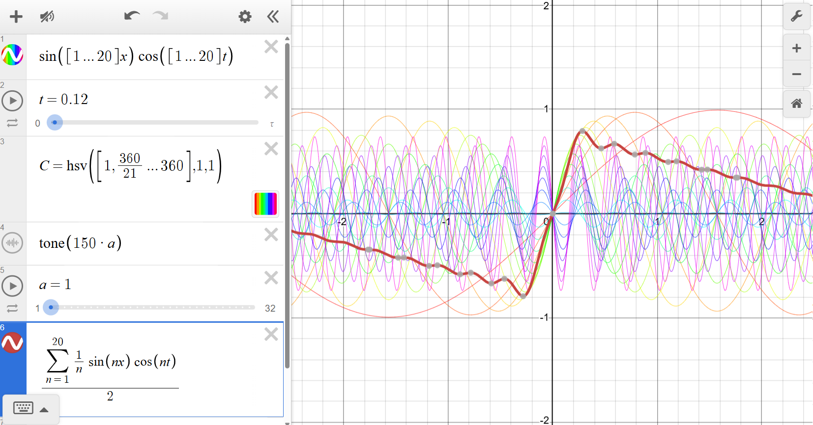
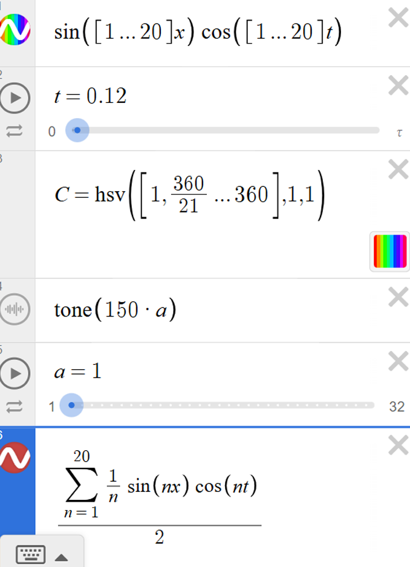
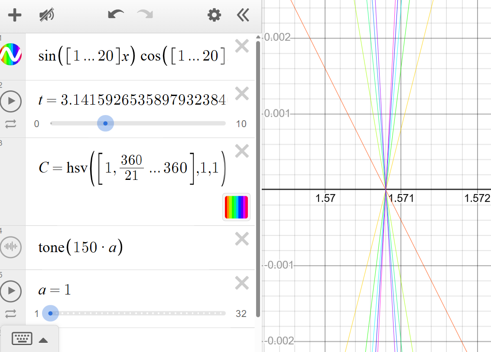
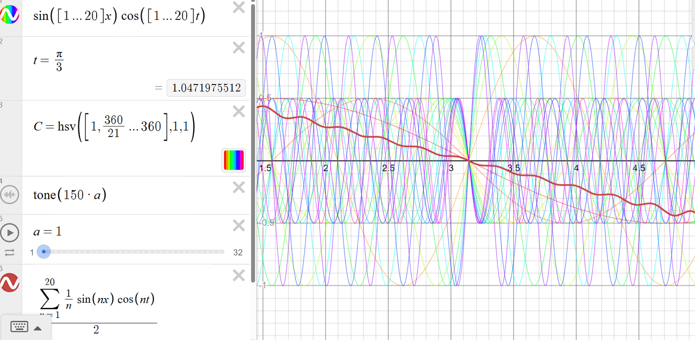
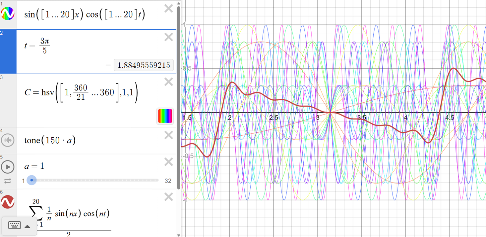

March 2, 2026
Standing-Wave Harmonics (1–20) — Observing Phase Alignment Cycles in Desmos
Overview:
This project is a Desmos implementation by Reiji (age 10).
It visualizes the harmonic series by drawing 20 standing waves (from the 1st harmonic to the 20th)
and letting them evolve over time.
The core idea is to observe when different harmonics “line up”—i.e., when groups of waves return to
the same sign/shape pattern at the same time value t. By entering specific values such as
\(t=\pi\) or \(t=\pi/3\), it becomes possible to “jump” directly to time points where recognizable periodic structure emerges.
In addition, Reiji added a weighted composite wave that overlays all 20 terms with a \(1/n\) amplitude weighting:
\[
\frac{\sum_{n=1}^{20}\frac{1}{n}\sin\left(nx\right)\cos\left(nt\right)}{2}
\]
This composite curve forms a sawtooth-like shape, allowing the motion of 20 harmonics to be observed as a single evolving waveform.
(Note: The final “/2” is a display scaling factor to keep the composite curve within view; it is used to reduce amplitude for readability and does not change the qualitative shape or timing patterns being observed.)
The displayed waves are colored as a set, and the project also includes optional sound playback using Desmos
tone() so the same parameter changes can be experienced both visually and aurally.
Note: All content on this page is originally explained by Reiji in Japanese. The English version is translated by AI and structured by a parent, with Reiji's final approval.
Reiji's Words and Ideas
-
What this is
I made this to observe the periodic structure created by overtones (harmonics). I draw 20 harmonics as standing waves and watch how the combined picture changes as time moves. Then I can check at what time values the waves look aligned again. -
Standing-wave formula
I draw the standing waves using: \[ \sin\left([1...20]x\right)\cos\left([1...20]t\right) \] This means I am drawing the set of waves \(\sin(nx)\cos(nt)\) for \(n=1,2,\dots,20\).
Because each harmonic uses \(n\cdot t\) inside \(\cos(\cdot)\), changing \(t\) changes the pattern differently for each \(n\). That makes it possible to observe when the patterns match up again. -
What I can observe
For example, the 3rd harmonic has harmonics that are multiples of 3 (6, 9, 12, ...). The 5th harmonic has multiples of 5 (10, 15, 20, ...). The 7th, 11th, and 13th harmonics are the same idea. With this graph, I can observe time values where these “multiples” become aligned in a clear way. -
Using specific time values
The variable \(t\) can be moved from 0 to \(\tau\) (tau), but I can also enter values directly. For example, if I set \(t=\pi\), I can observe a cycle where the pattern lines up in a “2-step” way. If I set \(t=\pi/3\), I can observe a cycle where the pattern lines up in a “6-step” way. By changing \(t\), I can view a specific periodic structure at an exact point. -
Composite wave (sawtooth-like)
I also made a composite wave by combining the 20 terms with equal phase but different amplitudes: \[ \frac{\sum_{n=1}^{20}\frac{1}{n}\sin\left(nx\right)\cos\left(nt\right)}{2} \] When I visualize this, the composite curve becomes sawtooth-like. This lets me observe the motion of 20 waves as a single waveform that changes over the observation time.
(Note: I divide by 2 because the graph becomes too large otherwise. This is only to fit the waveform on screen and make it easier to observe.) -
Color and sound
I set colors using HSV so I can distinguish the harmonics. I also use tone() (for example, \(\operatorname{tone}(150\cdot a)\)) so I can listen while watching, and link the idea of “alignment” to both sight and sound.

Main View: 20 Standing-Wave Harmonics + a Weighted Composite Curve
20 waves \(\sin(nx)\cos(nt)\) (for \(n=1..20\)) are drawn together. A weighted composite \(\frac{1}{2}\sum_{n=1}^{20}\frac{1}{n}\sin(nx)\cos(nt)\) is also overlaid as a single curve, forming a sawtooth-like shape that evolves as \(t\) changes.

Controls: Time \(t\), HSV Color Set, tone(), and the Composite Wave
The project uses a time slider \(t\) (0 to \(\tau\)), HSV coloring to separate harmonics, tone() playback, and the added composite-wave expression for observing the 20 terms as one curve.

Example: \(t=3\pi/5\) (Structured Alignment + Composite Motion)
Entering rational multiples of \(\pi\) can reveal different alignment structures. Here \(t=3\pi/5\) produces a distinct organization across the harmonic set, and the composite curve shows the net shape at that time.

Example: \(t=\pi/3\) (A 6-Class Repetition + Composite Wave)
With \(t=\pi/3\), values like \(\cos(n\pi/3)\) repeat depending on \(n \bmod 6\), and the composite curve shows how these repeating coefficient classes affect the net waveform.

Example: \(t=\pi\) (A Special Time for Clear Alignment)
When \(t=\pi\), \(\cos(n\pi)=(-1)^n\), so many harmonics fall into a clean even/odd sign pattern. This can make a sharp “lining up” point appear in the visualization.
| Output Link | Desmos page (interactive) |
|---|---|
| Application Used |
Desmos + tone() (Official site: https://www.desmos.com/ ) |
AI Assistant’s Notes and Inferences
Mathematically, each curve is a standing-wave term \(\sin(nx)\cos(nt)\), and the project overlays \(n=1..20\). “Alignment” can be understood as moments when the set of coefficients \(\{\cos(nt)\}\) falls into a small number of repeating values (often driven by modular structure when \(t\) is a rational multiple of \(\pi\)).
- For \(t=\pi\), \(\cos(n\pi)=(-1)^n\), so the harmonics separate cleanly into even/odd sign groups—this often produces a visually sharp alignment point.
- For \(t=\pi/3\), \(\cos(n\pi/3)\) repeats by \(n \bmod 6\), which makes a “6-class” structure appear across the 20 waves.
- The added composite wave uses a \(1/n\) weighting, a classic choice in Fourier synthesis that tends to produce a sawtooth-like shape. With a finite number of terms (here 20), the result appears as an approximation that becomes sharper as more terms are added.
Overall, this is a compact experiment that connects integer structure (harmonic series), time-phase relationships, and (optionally) listening via tone(). The composite curve also provides a useful “single-wave” summary of how the 20 components combine at each time \(t\).